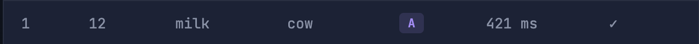

What do you think this experiment was about? That is to say, what aspect of your response do you think the researcher doing this experiment would be interested in, what kinds of data do you think the researcher would want to compare, and what do you think the results might show?
Now let's look at the experiment in a little bit more detail. First, look at the results of your experiment.
For now, you can ignore the stuff at the top and look below it. You'll see a bunch of rows and columns. Each line looks something like this:

The first two numbers are just information about the order of trials, you can ignore them. The first word is the first word you saw before the main word; the last word is the word you actually responded to (i.e., the one that you had to judge was a real word or a non-word); the letter is a code that indicates the condition (A or B). After that you see a time in milliseconds (ms) and if the response was correct or incorrect.
Look at your own data. There are three groups of words in this experiment, which you can find based on the code in the 'condition' column. All the trials whose condition is NW are 'nonwords', that is, the fake words. Actually, in this experiment we don't really care about these trials. They're what we call 'fillers'. They just help us balance the experiment and make it work. Think about that for a moment.
The answer is that if you didn't have nonwords, people would just say 'yes' to every trial in the experiment. That wouldn't work because they would never have to do any thinking at all, they could just press a single key until the experiment was done. So, that's why we need nonwords in lexical decision experiments.
The trials we actually care about are those labeled 'A' and 'B' (normally, I would use more informative condition names than 'A' and 'B', but I want you to try to figure out what the conditions are). Look through the list of words and explore the word pairs in condition A, and the word pairs in condition B. These are the two groups of words that we are going to want to compare.
What do you think is the important difference between the words in condition A and the words in condition B? Try to figure out a pattern and then keep your answer in mind as you move on to the next section of the module.